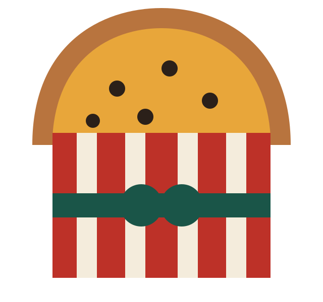
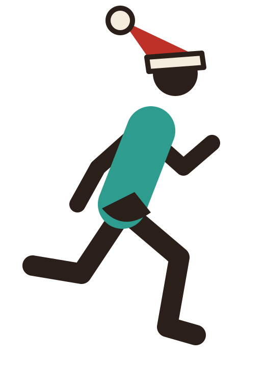
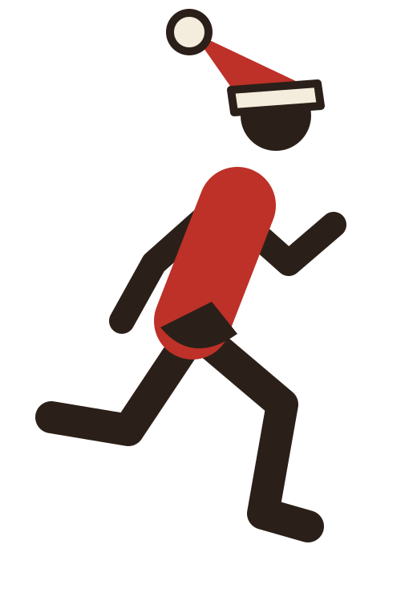
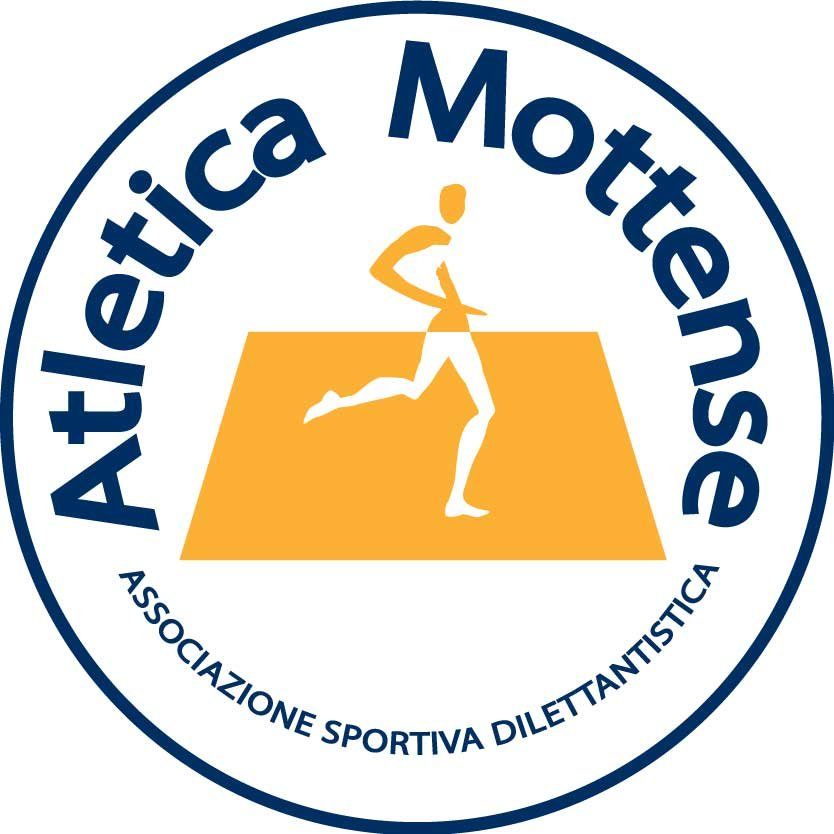

Atletica Mottense · una corsa da gustare insieme
Smaltiamo il panettone
Dopo il pranzo di Natale, una mattinata di corsa e compagnia.
26
Sabato
26 dicembre
Partenza ore 9.30
Arriva qualche minuto prima per conoscere il gruppo.
Gratissenza
iscrizione
iscrizione



Corsa e camminata, anche Nordic Walking · non competitiva
Partenza e arrivo
Parcheggio CIMICRiviera ScarpaMotta di Livenza (TV)
Il percorso
5 kmsul Giro del Paeseo, da ripetere quante volte vuoi. C'è anche chi fa 7 o 10 km.E alla fine…
Si ripristina!Brulè e tè caldi, spritz, panettone e patatine.Prudenza: metà percorso è su strada aperta al traffico, senza marciapiedi.
Tieni la sinistra e rispetta il Codice della strada.
Organizza

Con

Locandina A3 Smaltiamo il panettone, ridotta. Versioni social: aggiungi #post o #story all'indirizzo. PDF: stampa/Locandina-Panettone-A3.pdf.